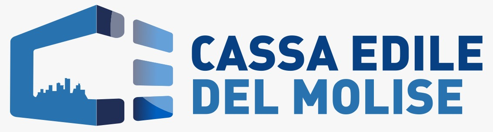
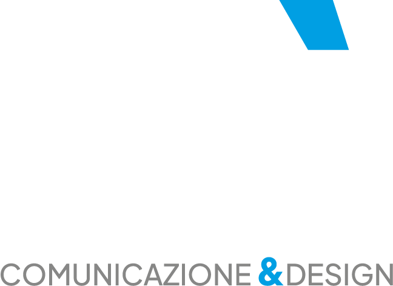

Presentazione strategica - sportello digitale
Diamo forma allo sportello che sta al lavoro.
Analisi e proposta di comunicazione per trasformare la demo Cassa Edile Molise in una piattaforma chiara, credibile e utile per imprese, lavoratori e consulenti.
Analisi del riferimento visivo
Il sito stà comunica con una grammatica precisa.
L'identità di stacomunicazionedesign.it lavora su contrasti forti, copy diretto e sistemi visivi ordinati: non decora, orienta. Questa logica viene tradotta qui in chiave istituzionale.
Headline brevi, memorabili
Frasi assertive, ritmo spezzato e parole chiave isolate. La presentazione usa titoli netti e leggibili anche a distanza.
Contrasto tra istituzionale e digitale
Blu profondo, accento azzurro e fondi chiari danno autorevolezza senza sembrare freddi o burocratici.
Metodo prima dell'effetto
La comunicazione mette in evidenza problemi, obiettivi e risultati. Ogni slide ha una funzione commerciale precisa.
Diagnosi del progetto
La demo ha già la sostanza. Serve renderla immediata.
Il sito locale contiene già pagine, servizi e componenti coerenti: area riservata, modulistica, documenti, appuntamenti, assistenza e percorsi per target. La presentazione li riorganizza come proposta di valore.
Il punto non è "avere un sito".
Per una Cassa Edile, il valore nasce quando l'utente capisce dove andare, quale modulo serve, cosa deve allegare e come seguire l'avanzamento della pratica.
- Menu e contenuti devono partire dal pubblico, non dagli uffici interni.
- Le procedure ricorrenti vanno guidate con percorsi e filtri.
- L'area riservata deve diventare il luogo naturale per stato pratiche e notifiche.
- La comunicazione deve ridurre telefonate, PEC duplicate e richieste incomplete.
Problema da risolvere
Quando tutto è importante, l'utente non trova niente.
DURC, congruità, MUT, Sanedil, Prevedi, Fondapi, versamenti, ferie e scadenze sono parole familiari agli uffici. Per l'utente diventano chiare solo se inserite in un percorso.
- Informazioni cercate da pubblici diversi nello stesso spazio.
- Modulistica percepita come archivio, non come strumento operativo.
- Richieste agli uffici ripetute per dubbi semplici e stato pratiche.
- Utenti che arrivano alla PEC senza sapere allegati, tempi e passaggi.
- Servizi digitali presenti ma non raccontati come vantaggio concreto.
Architettura proposta
Tre porte d'ingresso. Una piattaforma unica.
La demo deve dichiarare subito a chi parla. Ogni pubblico ha bisogni, linguaggio e priorità diverse: separare i percorsi semplifica il primo accesso e rende più efficiente il lavoro degli uffici.
Adempimenti senza dispersione
- Iscrizione e variazioni aziendali.
- DURC, regolarità e versamenti.
- Cantieri, congruità ed EdilConnect.
- Scadenze e documenti in dashboard.
Prestazioni spiegate bene
- Rimborsi, contributi e welfare.
- Ferie, gratifica e posizione personale.
- Sanedil, Prevedi e Fondapi.
- Appuntamenti con lo sportello giusto.
Strumenti per lavorare meglio
- Deleghe e pratiche aziende assistite.
- Circolari, aliquote e tabelle salariali.
- Ricerca documentale per adempimento.
- Ticket tecnici e integrazioni.
Esperienza chiave
La dashboard deve far capire cosa succede adesso.
Non basta un login. L'area riservata deve mostrare stato pratiche, scadenze, documenti, notifiche e azioni rapide nello stesso ambiente.
- Pratiche aperte e stato aggiornato.
- Documenti disponibili e richieste di integrazione.
- Scadenze imminenti e notifiche operative.
- Azioni rapide: carica documento, apri pratica, chiedi assistenza.
Area riservata
Dashboard impresa
Funzioni da presentare
Non feature isolate. Servizi che rispondono a bisogni reali.
Messaggi commerciali
Il racconto deve spostare il focus dal sito al servizio.
Roadmap
Dal prototipo alla presentazione al cliente.
Contenuti e priorità
- Mappare servizi reali e modulistica.
- Definire pubblici, uffici e flussi.
- Selezionare le procedure più richieste.
Percorsi guidati
- Home orientata ai target.
- Filtri per documenti e moduli.
- Wizard e schede operative.
Identità digitale
- Palette STA adattata alla Cassa.
- Componenti coerenti e accessibili.
- Layout responsive per ufficio e mobile.
Demo presentabile
- Area riservata dimostrativa.
- Pratiche, notifiche e ticket.
- PDF e pitch commerciale.
Sintesi
Una Cassa Edile digitale non deve solo informare. Deve togliere attrito.
La proposta mette ordine tra servizi, documenti e pratiche, con una comunicazione concreta e un'identità visiva riconoscibile: autorevole, chiara, operativa.